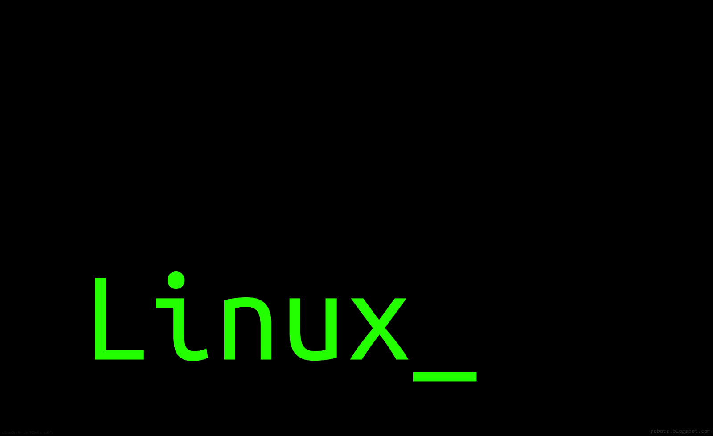
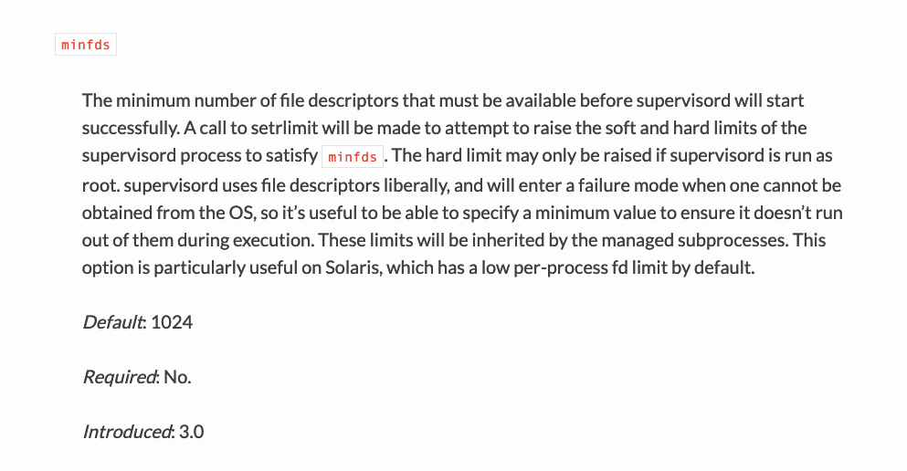

并行指的是进程或者线程在宏观或者微观上都在同时进行，并发指的是在宏观上进行同时运行，而在微观上是轮换运行。

1. 问题起因
- 早上到公司就有同事反馈某产品正式环境导出数据的时候，一直处于导入中，已经很长时间了。同时，我也发现上传文件的时候，也是有问题的。随即，跟了一下正式环境的日志，发现如下问题。
[2019-02-18 17:58:33,211: DEBUG/MainProcess] Task accepted: newslook.worker.tasks.make_question[6f2d9810-4b4c-4028-1234-21208638380b] pid:739
[2019-02-18 17:58:33,211: ERROR/ForkPoolWorker-1] Task newslook.worker.tasks.make_question[6f2d9810-4b4c-4028-1234-21208638380b] raised unexpected: OSError(24, 'Too many open files')
Traceback (most recent call last):
File "/data/web_backend/venv/lib/python3.5/site-packages/celery/app/trace.py", line 382, in trace_task
R = retval = fun(*args, **kwargs)
File "/data/web_backend/venv/lib/python3.5/site-packages/celery/app/trace.py", line 641, in __protected_call__
return self.run(*args, **kwargs)
File "/data/web_backend/newslook/worker/tasks.py", line 468, in make_question
loop = IOLoop()
File "/data/web_backend/venv/lib/python3.5/site-packages/tornado/util.py", line 293, in __new__
File "/data/web_backend/venv/lib/python3.5/site-packages/tornado/platform/epoll.py", line 26, in initialize
OSError: [Errno 24] Too many open files
2. 处理经过
- 从堆栈提示信息(
Too many open files)中，我们可以看到出现这种情况，大概率是因为导出数据的时候，并发数量太大使程序打开的文件句柄数量过多导致的。随即，查看了一下系统文件句柄数量的设置和使用情况。
| 可以导致的原因 | 处理方法 | 补充说明 |
|---|---|---|
单个进程打开 fb 过多 |
/etc/security/limits.conf |
修改文件或使用 prlimit 命令 |
操作系统打开的 fb 过多 |
/proc/sys/fs/file-max |
直接 echo 写入即可 |
Systemd 对进程限制 |
LimitNOFILE=20480000 |
通常在 /etc/systemd/system/ 目录下 |
Supervisor 对进程限制 |
minfds |
通常在 /etc/supervisor/conf.d/ 目录下 |
Inotify 达到上限 |
sysctl -p 或 /etc/sysctl.conf |
该机制受到 2 个内核参数的影响 |
########################
# 1.Shell级限制
########################
# 当前shell的当前用户所有进程能打开的最大文件句柄数量
# 这就意味着root用户和escape用户能够打开的最大文件数量可能会有所不同
# 非root用户只能越设置越小，而root用户不受限制
# 在ulimit命令里的最大文件打开数量的默认值是1024个
# 如果limits.conf有设置，则默认值以limits.conf文件设置为准
# 修改后立即生效，重新登录进来后失效，因为被重置为limits.conf里的设定值
$ ulimit -n
65535
$ ulimit -a | grep open
open files (-n) 65535
# 临时设置方法
$ ulimit -n 10240
# 永久生效
$ vim /etc/security/limits.conf
* soft nofile 65535
* hard nofile 65535
* soft nproc 65535
* hard nproc 65535
########################
# 2.用户级限制
########################
# 一个用户可能同时连接多个shell到系统，所以还有针对用户的限制
# 这里是通过修改/etc/security/limits.conf文件实现限制控制的
# 表示escape用户不管开启多少个shell终端所能打开的最大文件数量为65535个
escape soft nofile 65535 # 软限制
escape hard nofile 10240 # 硬限制
########################
# 3.系统级限制
########################
# 当前内核可以打开的最大的文件句柄数
# 系统会计算内存资源给出的建议值，一般为内存大小(KB)的10%来计算
$ cat /proc/sys/fs/file-max
3283446
$ grep -r MemTotal /proc/meminfo | awk '{printf("%d",$2/10)}'
3294685
# 单个进程可分配的最大文件数
$ cat /proc/sys/fs/nr_open
1048576
# 查看整个系统目前使用的文件句柄数
# 已分配文件句柄的数目 已使用文件句柄的数目 文件句柄的最大数目
$ cat /proc/sys/fs/file-nr
8056 0 3283446
- [1] 这里我们先区分好两个概念: 文件描述符和文件句柄
- 简单来说，每个进程都有一个打开的文件表(
fdtable)。表中的每一项是struct file类型，包含了打开文件的一些属性，比如偏移量，读写访问模式等，这才是真正意义上的文件句柄。 - 而文件描述符则是一个整数，它代表
fdtable在操作系统中存储的索引位置(下标)，指向具体的struct file，即文件句柄。 - 其中
file-nr文件里面的第一个字段代表的是内核分配的struct file的个数，也就是文件句柄个数，而不是文件描述符。
- 简单来说，每个进程都有一个打开的文件表(
- [2] 操作系统的哪些地方需要分配文件句柄
- 系统调用
open打开文件 - (path_openat内核函数) - 打开一个目录 - (
dentry_open函数) - 共享内存
attach- (do_shmat函数） socket套接字 - (sock_alloc_file函数）- 管道 - (
create_pipe_files函数） epoll/inotify/signalfd等功能用到的匿名inode文件系统 - (anon_inode_getfile函数)
- 系统调用
# file-max
The value in file-max denotes the maximum number of file-
handles that the Linux kernel will allocate. When you get lots
of error messages about running out of file handles, you might
want to increase this limit
# nr_open
This denotes the maximum number of file-handles a process can
allocate. Default value is 1024*1024 (1048576) which should be
enough for most machines. Actual limit depends on RLIMIT_NOFILE
resource limit.
- 系统中有些地方会进行资源的限制，其中的一个就是
open file的限制，操作系统默认限制的是1024个。这个值可以通过各种方式修改，如何高效且优雅的在线修改呢？我们可以调用的是prlimit进行的在线修改。
# 查询指定进程的限制
$ cat /proc/6020/limits
$ prlimit --pid 6020
RESOURCE DESCRIPTION SOFT HARD UNITS
AS address space limit unlimited unlimited bytes
CORE max core file size 0 unlimited blocks
CPU CPU time unlimited unlimited seconds
DATA max data size unlimited unlimited bytes
FSIZE max file size unlimited unlimited blocks
LOCKS max number of file locks held unlimited unlimited
MEMLOCK max locked-in-memory address space 65536 65536 bytes
MSGQUEUE max bytes in POSIX mqueues 819200 819200 bytes
NICE max nice prio allowed to raise 0 0
NOFILE max number of open files 1024 4096
NPROC max number of processes 128554 128554
RSS max resident set size unlimited unlimited pages
RTPRIO max real-time priority 0 0
RTTIME timeout for real-time tasks unlimited unlimited microsecs
SIGPENDING max number of pending signals 128554 128554
STACK max stack size 8388608 unlimited bytes
# 修改指定运行进程的限制
[root@lab8106 ~]# prlimit --pid 6020 --nofile=10240
[root@lab8106 ~]# prlimit --pid 6020 |grep NOFILE
NOFILE max number of open files 10240 10240
- 通过查找结果之后，我们发现配置的文件句柄数量都是比较大的，应该不会出现不够用的情况。随即，查看是那些进程占用了如此多的文件句柄。
# 总共打开的文件句柄数量
$ sudo lsof | wc -l
45727
# 统计进程和打开的文件句柄数量
$ lsof -n | awk '{print $2}' | sort -rn | uniq -c | sort -rn
2392 489
2304 739
2301 11163
2300 11162
......
# 查看所有进程的文件打开数
$ lsof | wc -l
# 查看某个进程开的进程
$ lsof -p pid
# 查看某个进程的的文件句柄数
$ lsof -p pid | wc -l
# 查看某个目录，文件被什么进程占用
$ lsof path(file)
- 而我们使用
supervisord工具来管理python进程的话，默认每个进程分配的文件句柄数量，默认值为1024个。通过上面的命令，查看到对应进程打开的文件数据超过了这个限制了，所以导致出现文件句柄不足的问题。通过在[supervisord]段中配置minfds参数可以解决。

[supervisord]
logfile=/var/log/supervisor/supervisord.log
nodaemon=false
minfds=50000
minprocs=50000
loglevel=info
logfile_backups=10
logfile_maxbytes=50MB
3. 结果总结
- 我们可能会发现即便在一个比较正常的系统上，也可以看到
file-nr和lsof的输出还是有不小的差距。这里本质上是因为文件描述符和文件句柄是两个不同的东西，file-nr文件里面的第一个字段代表的是文件句柄个数，而lsof在用户空间且主要还是从文件描述符的角度来看文件句柄。
$ lsof -P -n | wc -l
17968
$ cat /proc/sys/fs/file-nr
7040 0 3283446